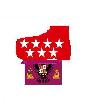

Toledo
 De: La Frikipedia, la enciclopedia extremadamente seria.
De: La Frikipedia, la enciclopedia extremadamente seria.
| De la serie ciudades del mundo:
|
| Sur de Madrid o aldea
|
| 
|

|
| (Bandera)
|
(Escudo de armas)
|
|
| Topónimo oficial
|
madritanos
|
| País
|
España
|
| Código postal
|
pendiente de asignar
|
| Superficie
|
si
|
| Altitud
|
10 pisos
|
| Distancia
|
lo sufifiente para llegar tarde a currar
|
| Fundación
|
9851 a.c.
|
| Población
|
indignada
|
| Gentilicio
|
antes Tolais y ahora madrileños
|
| Alcalde
|
varios
|
| nada de esto se basa en nada, no tener en cuenta please
|
Toledo es una de las muchas ciudades dormitorio de cenar y ver la tele) se van a la ciudad dormitorio. Esto implica perder diariamente una media de 4 horas en el traslado (siempre que tengas coche porque sino este tiempo puede convertirse en 5 días). Pero no todo es malo (o por lo menos eso me han dicho).
Historia

No confundir con el Alcazar de Toledo aunque se le parezca
Aunque al principio de los tiempos se intentó que Toledo formase una provincia, dos motivos principalmente obligaron a los madrileños a lanzarse a la conquista de nuevos territorios (entre ellos Toledo, como es obvio, ya que si no esta alusión justo en este sitio no tendría ningún sentido):
- El alto coste de los pisos dentro de las murallas de Madrid, hacía imperiosa la necesidad de encontrar sitios asequibles en los que caerse muertos y cuya extensión superase los 30 m2.
- La necesidad de escapar de la ley seca, cuya existencia impedía a los jóvenes madrileños divertirse a altas horas de la noche sin tener que gastarse 9 euros (de las antiguas pesetas) en una copa de garrafón. Así como no permitir a mi madre comprar una cervecita para hacer un pollo a la cerveza el día de mi cumpleaños. Porque mi madre sale de trabajar a las 22:30 (hora en la que está prohibido comprar alcohol) y todo el mundo sabe que la cerveza se estropea 5 horas después de haberla comprado. Así que me quedé si pollo a la cerveza el día de mi cumpleaños :_(.
- No hay una tercera. Pero si no escribo una tercera entonces queda un hueco enorme por culpa de la imagen que hay justo al lado. Y más vale texto sin contenido que espacio en blanco. Como dijo Anónimo: más vale tener un millón de libros que hablen de lo que te de la gana a escribir uno sólo y que te quemen en la hoguera por decir que la tierra es redonda.
Economía
Toledo es conocido principalmente por:
- .....porque sale en un mapa de españa?...
- Sus exportaciones de cánnabis
- El acueducto de Toledo
- La carretera de Toledo (la N-401).
- por el niño-niña
Curiosidades
- Es costumbre española, siempre que alguien hace algo muy bien (principalmente en espectáculos), gritar "TOLEEEDO, TOLEEEDO, TOLEEEDO".
- El 95% del suelo de lo que antes se llamaba "provincia de Toledo" y que actualmente se denomina "Sur de Madrid" está cubierto de plantaciones de María.
- El nombre de Toledo proviene de la palabra griega "tolai", que significa "pringao". Lo cual no quiere decir que los tolais, digo toledinos, digo toledanos, ufff, como se diga!!!, sean unos pringaos. El nombre viene del rey Paco Adriana I. Para más información, buscar a este señor.
- Tenemos un Hiper, también llamado Eroski, al que van todos los niñatos de la capital del Sur a pasar el rato, porque las compras más importantes, tenemos que irnos a Madrid o a los hiper de Talavera o Ciudad Real.
- En sus cercanías se encuentra el curioso pueblo de Nambroca.
Personajes Ilustres
- Toledo fue capital del imperio donde nunca se pone el sol
- El alcalde, NoSeKien Molina
- Toledo fue capital del imperio donde nunca se pone el sol
- mmm, no se me ocurre nada, pero llamemosle BOLOS, seudonimo muy utilizado alli
- Toledo fue capital del imperio donde nunca se pone el sol gracias al Yunque.
Deportes
- Lanzarse piedras unos a otros, en dias de fiestas regionales.
- corre corre que te pillo... y como te pille te
follo
- La maratón de madrid para ir de fiesta por la noche.
- Su club más característico es el C.D. Toledo, un grande de la Segunda División venido a menos en los últimos años. Pasó de casi ascender a Primera División, a deambular por los campos de la región en Tercera.
- Gregorio Manzano es su más ilustre entrenador.
- Quini fue uno de los mayores goleadores
- Estos dos últimos, robados a nuestro máximo rival, el Talavera C.F.
Autor(es):
- Fordus
- Diegocon13
- Titvs
- Genericool
- Dancob
- Rosky
- Caracaja
- Toledanofrikiactivo
- Mocoloco
Frikipedia 2005-2016, Licencia
GFDL 1.2 - Extraído por FrikiLeaks